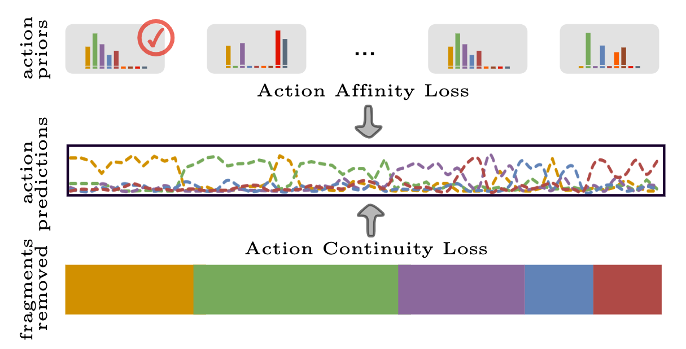

|  |
Guodong Ding and Angela Yao
National University of Singapore
We present a semi-supervised learning approach to the temporal action segmentation task. The goal of the task is to temporally detect and segment actions in long, untrimmed procedural videos, where only a small set of videos are densely labelled, and a large collection of videos are unlabelled. To this end, we propose two novel loss functions for the unlabelled data: an action affinity loss and an action continuity loss. The action affinity loss guides the unlabelled samples learning by imposing the action priors induced from the labelled set. Action continuity loss enforces the temporal continuity of actions, which also provides frame-wise classification supervision. In addition, we propose an Adaptive Boundary Smoothing (ABS) approach to build coarser action boundaries for more robust and reliable learning. The proposed loss functions and ABS were evaluated on three benchmarks. Results show that they significantly improved action segmentation performance with a low amount (5% and 10%) of labelled data and achieved comparable results to full supervision with 50% labelled data. Furthermore, ABS succeeded in boosting performance when integrated into fully-supervised learning.
Files: [pdf]
Citation:
@inproceedings{ding2022leveraging,
title={Leveraging Action Affinity and Continuity for Semi-supervised Temporal Action Segmentation},
author={Ding, Guodong and Yao, Angela},
booktitle={European Conference on Computer Vision},
year={2022}
}